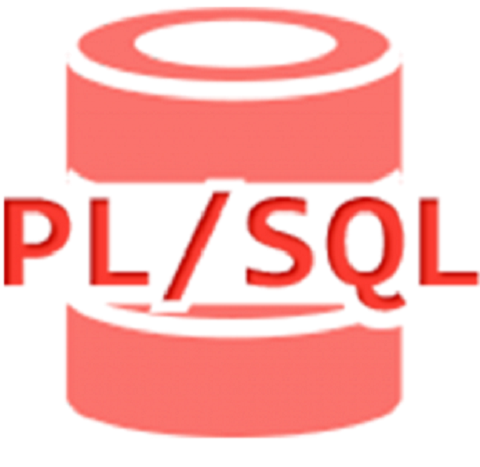

Definition of PL/SQL Queries
PL/SQL provides the different queries, or we can say commands to the user. Basically, PL/SQL is similar to the SQL language. But PL/SQL introduces the different methods that consist of the block structure, and it is helpful for well suitable development.
PL/SQL also provides the variable in which we can perform the variable deceleration as well as we can assign the name as well. PL/SQL structure divides into different sections, and we can write the different queries into an execution section as per user requirement. We can perform the update, create, insert and delete, etc., as per requirement.
Example: We can perform the update, create, insert and delete, etc..
List of all PL/SQL Queries :
Now let’s see different types of queries in PL/SQL as follows.
1. Create definition query:
Variables declared in any code block can be subjected to constraints. A constraint is a condition that needs to be applied to a certain variable. Constant and non-null constraints are the most often utilized constraints. Constants are used to ensure that a value does not change after it is given for the first time. Not null ensures that the variable has a value at all times. An error will occur if any value attempts to assign a null value. Unique, check, main key, foreign key, and other restrictions are among the others.
Syntax:
BEGIN
create table specified table name (required colm name 1specify data type(size), required
colm name 2specify data type(size),….required colm name N specify data type(size));
END;
Explanation:
n the above syntax, we use create table statement to create a new table; here, the specified table name means the actual table name that we need to create. Inside the bracket, we can write different column names as per our requirement with different data types as shown.
Examples:
create table studentA(stud_id number(10) not null, stud_name varchar2(30) not null,
stud_city varchar2(30));
Explanation:
By using create table statement, we created a new table name student A, with different attributes and different data types. The final output of the above statement we illustrated by using the below screenshot is as follows.
Variables in PL/SQL
A variable is a meaningful name which facilitates a programmer to store data temporarily during the execution of code. It helps you to manipulate data in PL/SQL programs. It is nothing except a name given to a storage area. Each variable in the PL/SQL has a specific data type which defines the size and layout of the variable's memory.
A variable should not exceed 30 characters. Its letter optionally followed by more letters, dollar signs, numerals, underscore etc.
How to declare variable in PL/SQL
You must declare the PL/SQL variable in the declaration section or in a package as a global variable. After the declaration, PL/SQL allocates memory for the variable's value and the storage location is identified by the variable name.
Syntax:
variable_name [CONSTANT] datatype [NOT NULL] [:= | DEFAULT initial_value]
IF in PL/SQL
PL/SQL supports the programming language features like conditional statements and iterative statements. Its programming constructs are similar to how you use in programming languages like Java and C++.
There are different syntaxes for the IF-THEN-ELSE statement.
Syntax: (IF-THEN statement):
IF condition
THEN
Statement: {It is executed when condition is true}
END IF;
This syntax is used when you want to execute statements only when condition is TRUE.
Syntax: (IF-THEN-ELSE statement):
IF condition
THEN
{...statements to execute when condition is TRUE...}
ELSE
{...statements to execute when condition is FALSE...}
END IF;

Case in PL/SQL
The PL/SQL CASE statement facilitates you to execute a sequence of satatements based on a selector. A selector can be anything such as variable, function or an expression that the CASE statement checks to a boolean value.
The CASE statement works like the IF statement, only using the keyword WHEN. A CASE statement is evaluated from top to bottom. If it get the condition TRUE, then the corresponding THEN calause is executed and the execution goes to the END CASE clause.
CASE [ expression ]
WHEN condition_1 THEN result_1
WHEN condition_2 THEN result_2
...
WHEN condition_n THEN result_n
ELSE result
END
Loop in PL/SQL
The PL/SQL loops are used to repeat the execution of one or more statements for specified number of times. These are also known as iterative control statements.
Syntax for a basic loop:
LOOP
Sequence of statements;
END LOOP;
There are 4 types of PL/SQL Loops.
1.Basic Loop / Exit Loop
2.While Loop
3.For Loop
4.Cursor For Loop
Exit Loop in PL/SQL
PL/SQL exit loop is used when a set of statements is to be executed at least once before the termination of the loop. There must be an EXIT condition specified in the loop, otherwise the loop will get into an infinite number of iterations. After the occurrence of EXIT condition, the process exits the loop.
PL/SQL also provides the variable in which we can perform the variable deceleration as well as we can assign the name as well. PL/SQL structure divides into different sections, and we can write the different queries into an execution section as per user requirement. We can perform the update, create, insert and delete, etc., as per requirement.
Example: We can perform the update, create, insert and delete, etc..
While Loop in PL/SQL
PL/SQL while loop is used when a set of statements has to be executed as long as a condition is true, the While loop is used. The condition is decided at the beginning of each iteration and continues until the condition becomes false.
PL/SQL also provides the variable in which we can perform the variable deceleration as well as we can assign the name as well. PL/SQL structure divides into different sections, and we can write the different queries into an execution section as per user requirement. We can perform the update, create, insert and delete, etc., as per requirement.
Example: We can perform the update, create, insert and delete, etc..
For Loop in PL/SQL
PL/SQL while loop is used when a set of statements has to be executed as long as a condition is true, the While loop is used. The condition is decided at the beginning of each iteration and continues until the condition becomes false.
PL/SQL also provides the variable in which we can perform the variable deceleration as well as we can assign the name as well. PL/SQL structure divides into different sections, and we can write the different queries into an execution section as per user requirement. We can perform the update, create, insert and delete, etc., as per requirement.
Example: We can perform the update, create, insert and delete, etc..
PL/SQL while loop is used when a set of statements has to be executed as long as a condition is true, the While loop is used. The condition is decided at the beginning of each iteration and continues until the condition becomes false.
PL/SQL also provides the variable in which we can perform the variable deceleration as well as we can assign the name as well. PL/SQL structure divides into different sections, and we can write the different queries into an execution section as per user requirement. We can perform the update, create, insert and delete, etc., as per requirement.
Example: We can perform the update, create, insert and delete, etc..
IF in PL/SQL
PL/SQL supports the programming language features like conditional statements and iterative statements. Its programming constructs are similar to how you use in programming languages like Java and C++.
There are different syntaxes for the IF-THEN-ELSE statement.
Syntax: (IF-THEN statement):
IF condition
THEN
Statement: {It is executed when condition is true}
END IF;
This syntax is used when you want to execute statements only when condition is TRUE.
Syntax: (IF-THEN-ELSE statement):
IF condition
THEN
{...statements to execute when condition is TRUE...}
ELSE
{...statements to execute when condition is FALSE...}
END IF;
GOTO in PL/SQL
In PL/SQL, GOTO statement makes you able to get an unconditional jump from the GOTO to a specific executable statement label in the same subprogram of the PL/SQL block. Here the label declaration which contains the label_name encapsulated within the <<>> symbol and b must be followed by at least one statement to execute.
Syntax of GOTO: GOTO label_name;
Syntax: (IF-THEN statement):
IF condition
THEN
Statement: {It is executed when condition is true}
END IF;
This syntax is used when you want to execute statements only when condition is TRUE.
Syntax: (IF-THEN-ELSE statement):
IF condition
THEN
{...statements to execute when condition is TRUE...}
ELSE
{...statements to execute when condition is FALSE...}
END IF;